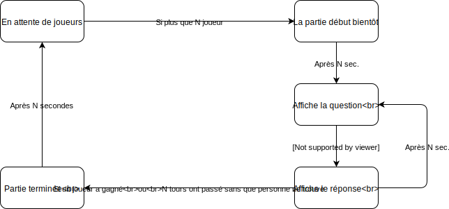

OpenSauce
Damian Petroff, Malik Fleuri, Raphaël Margueron
Table des matières
- Principes
- Ajouts
- Reports
- WebSockets
- Améliorations possibles
- Conclusion
Principe du jeu
PopSauce

Machine à état
Ajouts
Reports
Websockets
- Django-Channels
- Nouvelles routes pour les Websockets
- WebsocketConsumer : connect, disconnect, receive
Websockets
routing.py
websocket_urlpatterns = [
url(r'^lobby/(?P[^/]+)/', OpenSauceConsumer),
]
Websockets
OpenSauceConsumer.py
class OpenSauceConsumer(WebsocketConsumer):
def connect(self):
self.accept()
# do stuff
# self.scope["url_route"]["kwargs"]["lobby_name"]
# self.scope["headers"]["sec-websocket-key"]
def disconnect(self, close_code):
#do stuff
def receive(self, text_data):
data = json.loads(text_data)
# do stuff
Améliorations possibles
- Plus d'options pour les salons
- Corriger quelques problèmes mineurs
- Et plein d'autres, liste complètes : Issues GitHub